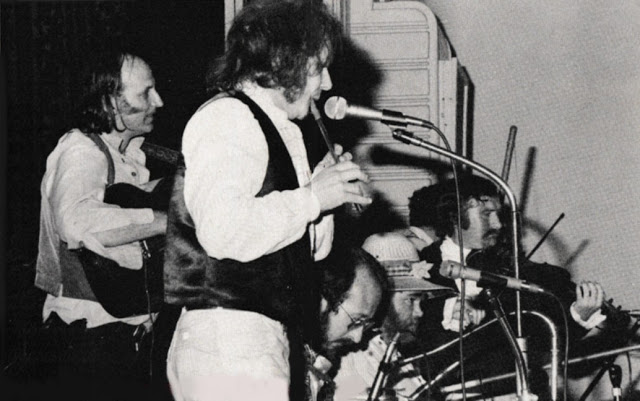

Ray Grieve was the vocalist and rhythm guitarist in 1960s Sydney rock and blues bands including the Elliot Gordon Union. He played flute and tin whistle in traditional Australian folk bands and was one of the founding members of The Rouseabouts within the Bush Music Club in the 1970s.
He has written and published two books on the history of the harmonica in Australia, which he began researching and collecting materials for in 1981. A Band in a Waistcoat Pocket was published by Currency Press in 2001, and the companion tape and CD sets of original historic Australia mouth organ recordings (Larrikin Records) was launched by Larry Adler inn 1995. Boomerangs and Crackajacks, the book and CD written and produced by Ray, was launched at the 2014 National Folk Festival in Canberra by Kevin Bradley, Director of Sound and Preservation at the National Library.
His most recent band, Bushlark, has released two independent CD albums, in which Ray performs vocals, flute, tin whistles and other various folk-wind instruments. These albums are titled Ready River Flute (2000) and For Now (2007).
You can contact Ray at any time by emailing bushlarkmusic@yahoo.com.au.

BMC's 2nd Colonial Ball, August 1979, Rockdale Town Hall